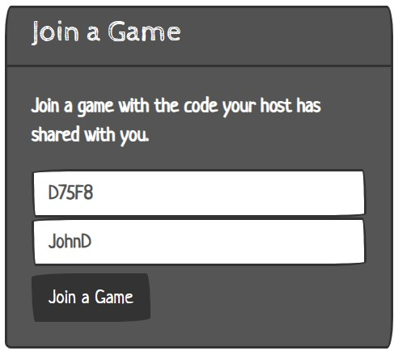

First, are you the host or a player? If you are a player, keep reading for instructions. If you are the host, scroll to the "How to Host" section.
Your host will have either sent you a link or given you a code
If you have the URL, just paste it in your browser and it will take you straight to the game!
If you have the game pin, go to the homepage and type it into the box shown below and enter your display name (this is the name you wil play as)
Then click join
Once you have joined the game you will be taken to the game waiting room. Here you need to join the video call on the left hand side, your display name should be saved if you entered it previously.

The video call will remain in place throughout, so you can chat with players at any time. The host may mute you during game play so beware!
You can change your audio and video settings like any other video call
Your name should then appear in the current players box, here you can see who else is in the game
The game cannot start until all players declare themselves as ready. So, when you are ready to play, click the "Ready" button
angular-src\src\app\components\how-to-play\images angular-src\src\app\components\how-to-play\images D:\mean-pub-quiz\angular-src\src\app\components\how-to-play\images
Now you just need to wait for the host to start the game!
The host will have decided what features they wish to include in the game, so not all of these may appear for you!
You will be randomly split into teams and you will be able to see who is in your team when the game begins
The reconnect code is important! It is how you will rejoin the game if you get disconnected, write it down!

You will see the question, answer and the points it is worth.

The buzzer is for your team, and will be the colour of your team. Press it if you know the answer!

The timer will countdown to give you time to answer the question.

The interteam chat means you can privately communicate with those in your team

First, enter your display name and create the game
Then, join the video call meeting on the left hand side of the screen
Now, confirm yourself as the host.
Now you can set your game settings
You can customise how you want to play the game